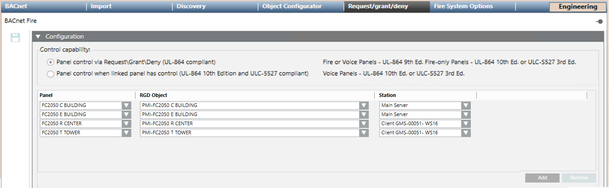

BACnet Network Request/Grant/Deny Options
The Request/Grant/Deny tab of the BACnet network contains the fire control ownership options as applicable to the fire panels integrated in Desigo CC.
The tab includes the Configuration expander that is generally described here. For detailed configuration instructions, search for the workflow of the fire panel you are interested in, for example Configuring <fire panel name>, and then refer to the Configure BACnet Fire Network step.
Control Capability
In the Control Capability section, select the fire norms to apply:
- UL-864 9th edition, or
- UL-864 10th edition and ULC-S527.
UL-864 9th ed. requires a request/grant/deny mechanism of the control capability. UL-864 10th ed. and ULC-S527 require an association between management stations and control panels (FCC or Global Command Station).
Station Associations
For UL-864 10th ed. and ULC-S527 compliant systems, you need to set the management stations associated to (located in the same room as) the PMI objects of the fire panels. Using the Add and Remove buttons, you can create a list of association items that include:
- The fire Panel.
- The RGD Object in the panel. This must be a PMI object that can be one of the following:
- Led Annunciator
- Terminal Element
- Voice Station
- The associated Desigo CC Station.
